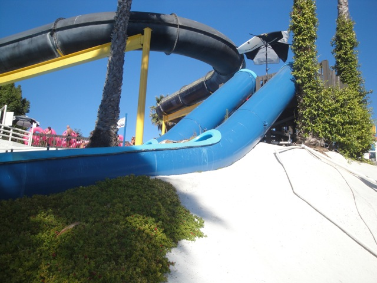

| |

Nairobi Express Review
For this review, we're going to travel back in time to 2011, which was my last visit to Wild Rivers. For this Wild Rivers Review, we'll be reveiwing Nairobi Express. When I first to Wild Rivers in 2007, I had assumed that the slide had suffered a similar fate to the Liquidator as I never saw it run once during my entire visit. But when I returned to the park in 2009, when I was in line for Bombay Blasters, I saw it for my very own eyes. Narombi Express was running! So after my awsome Bombay Blasters ride, Cody and I rushed up to try out a slide we thought was permanently SBNO. We got two rides in and talked to one of the lifeguards. She told us that the slide has valve problems and therefor, almost never runs. True enough, when I went for a photo run a couple hours later, Narombi Express was closed and remained closed for the rest of the day and my 2010 visit. But to my shock, when we went in 2011, it was open. And not just for 20 minutes, it was open ALL DAY!!!!!!! Never in my life would I thought I'd see this slide open for a whole day straight. Anyways, you climb up the stairs, and sit on the slide, waiting for the lifeguard to say go. You first started off with a small steep enclosed drop that let you out on a gradual incline down the mountain. You were going pretty fast down this part when you see the final drop down the mountain coming. But before you can say "Oh Shit!!", you already hurdeling down that drop and into the splash zone. Though in 2011, Nairobi Express actually was really rough on our backs. In fact, it did more damage to our backs than Bazooka Bowls. However despite that, it had a lot of speed, some decent airtime, and was almost never open. I miss it, but not nearly as much as Bazooka Bowls or Bombay Blasters.
8/10
Location: Wild Rivers
Opened: I honestly don't know
Built by: I honestly don't know.
Last Ridden: July 18, 2011
Nairobi Express Photos



|